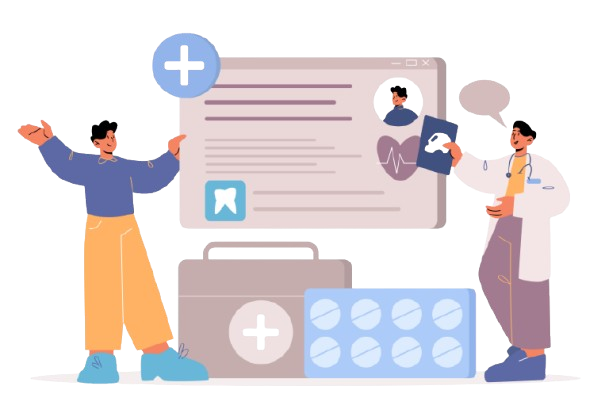
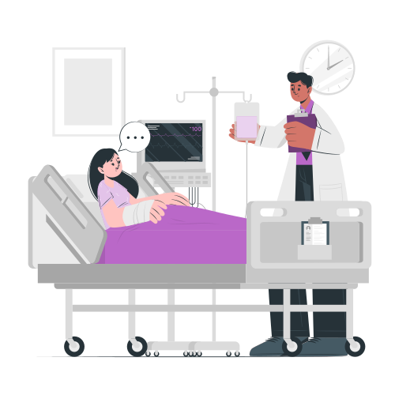
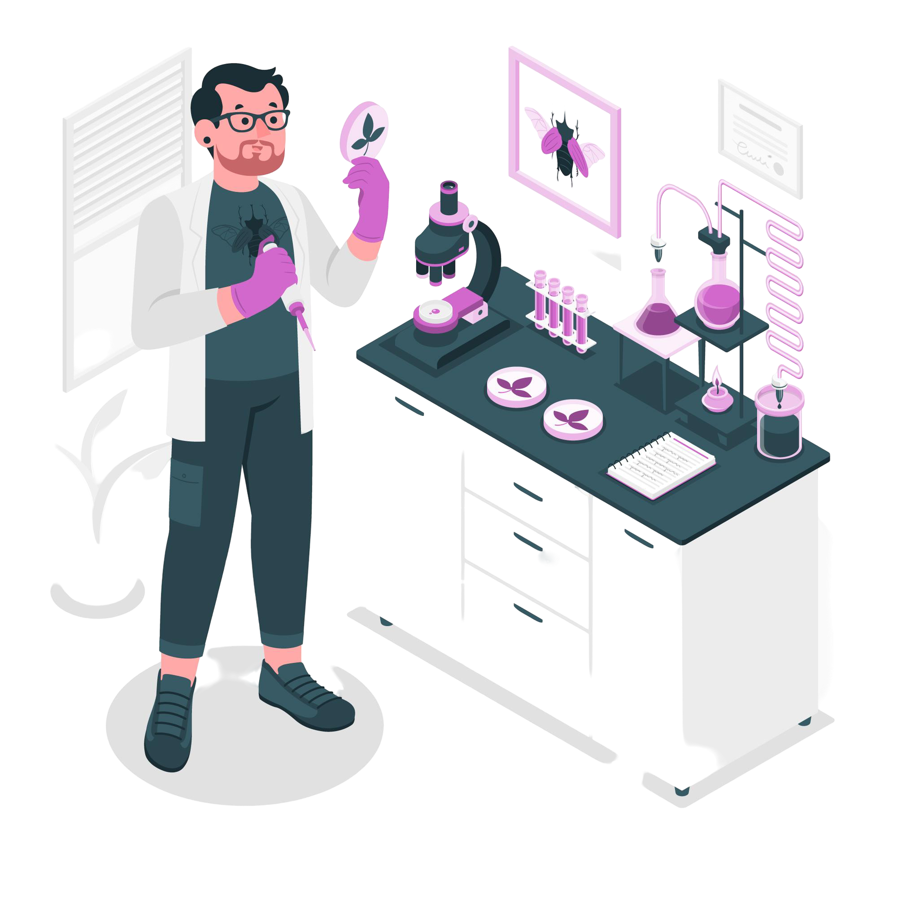
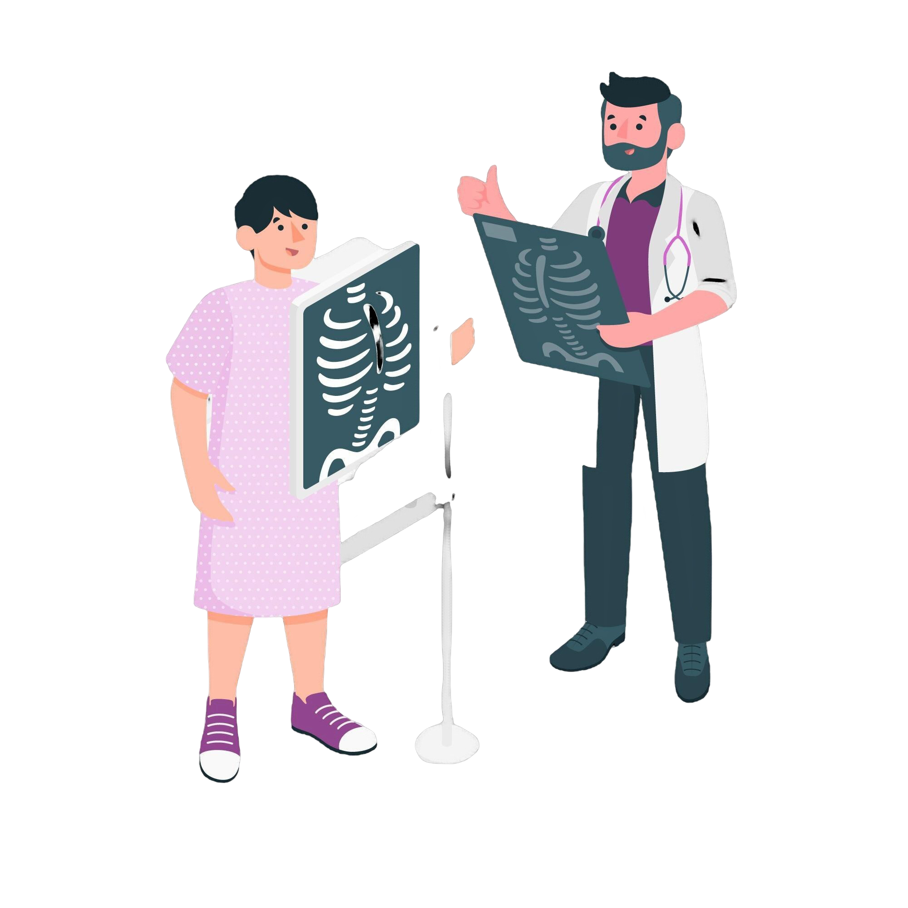

Bienvenue dans le système de gestion du Dossier Patient Informatisé
Une application innovante pour centraliser les informations médicales, simplifier la gestion des soins et améliorer la collaboration entre patients et professionnels de santé.

Fonctionnalités
Pour les professionnels de santé
Médecins
- 🔍 Gestion de l'historique médical
- 💊 Création et gestion des ordonnances
- 💻 Consultations et diagnostics en ligne
- 📋 Gestion des prescriptions et suivis médicaux
- 📝 Consultation des résultats d'examens
- 💬 Communication avec les patients et l'équipe médicale

Infirmiers
- 📝 Saisie des soins des patients
- 👨⚕️ Observation et suivi des états de santé
- 💉 Administration des traitements
- 📋 Mise à jour des dossiers médicaux
- 💬 Communication avec les médecins et les patients

Laboratins
- ✅ Validation des ordonnances
- 🔬 Traçabilité des traitements
- 💉 Tests et analyses de laboratoire
- 📊 Suivi des résultats des patients
- 📋 Gestion des rapports médicaux
- 📝 Collaboration avec les médecins et infirmiers

Radiologues
- ✅ Validation des ordonnances
- 🔬 Traçabilité des traitements
- 💉 Tests et analyses de laboratoire
- 📊 Suivi des résultats des patients
- 📋 Gestion des rapports médicaux
- 📝 Collaboration avec les médecins et infirmiers
Pour les patients
Accès aux dossiers
Consultez vos dossiers médicaux en toute sécurité.
Demandes administratives
Demandez des certificats médicaux et des documents administratifs en ligne.
Suivi des traitements
Accédez aux ordonnances et suivez vos plans de soins facilement.
Rendez-vous médicaux
Prenez ou modifiez vos rendez-vous avec simplicité.
Résultats de laboratoire
Consultez rapidement vos résultats d'analyses.
Informations de contact
Trouvez les coordonnées de vos médecins et établissements.